Goal of these two hours: The Rover stands complete — chassis, head, body shells and both grip arms — and nothing binds.
New conceptBuilding from a printed guide, at scale You build A tracked robot, fully assembled, before a single block is written.
You need — pieces & materials
Rover, assembled
being built
Rover add-on box
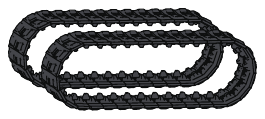
Track ×2
Rover add-on box
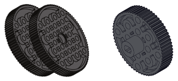
Wheel hubs (large + small)
Rover add-on box
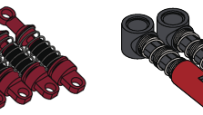
Shock absorbers
metal ×4, plastic are spares
Rover add-on box
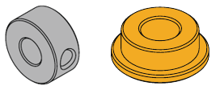
Shaft collar + flange bearing
Rover add-on box
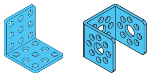
Brackets 90° / 120° / U
Rover add-on box
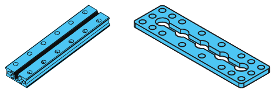
Slide beams + plates
Rover add-on box
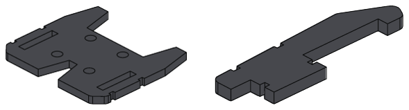
Boards 1–8
Rover add-on box
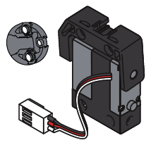
Servo pack
Rover add-on box
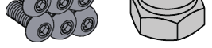
Rover screws + nuts
Rover add-on box
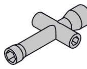
Socket wrench
Rover add-on box
Quick Start Guide
chassis → arms
Rover add-on box
Build it — from the official guide printed booklet · chassis · head · joining and crossed cables · shells · arms
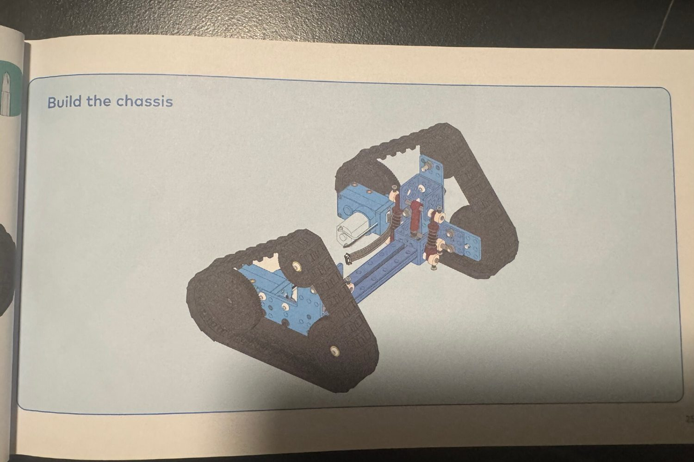
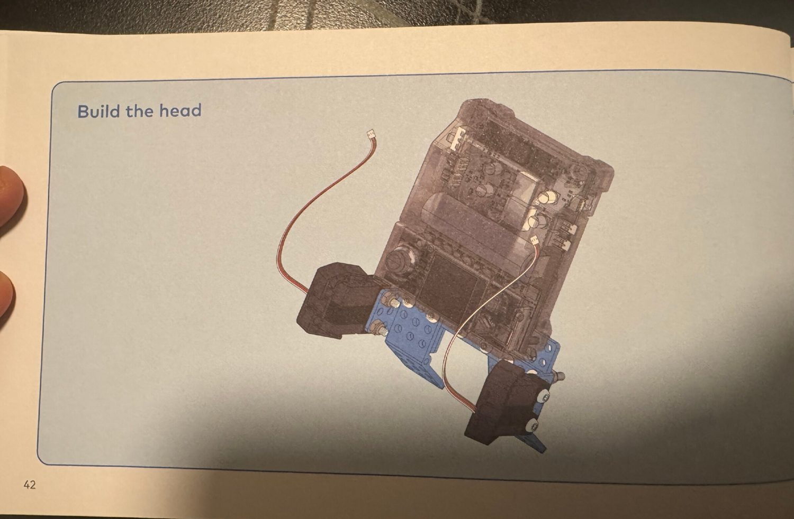
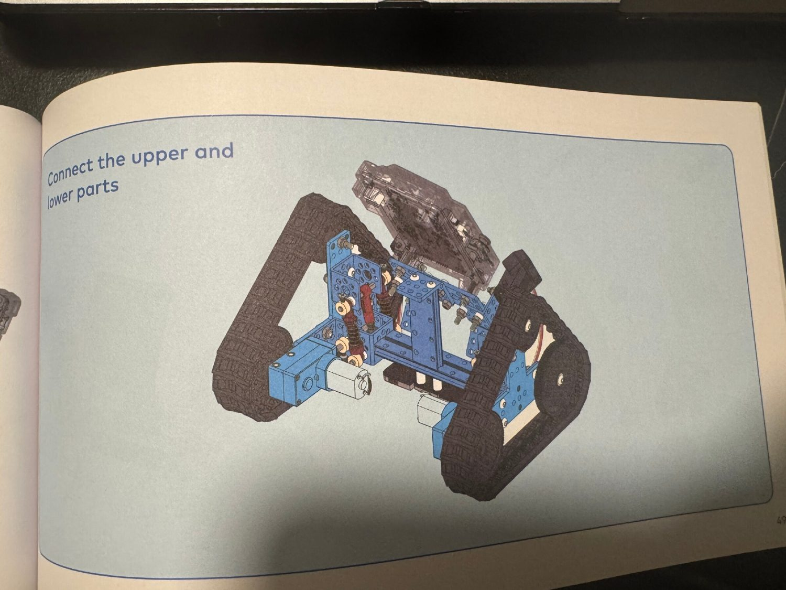
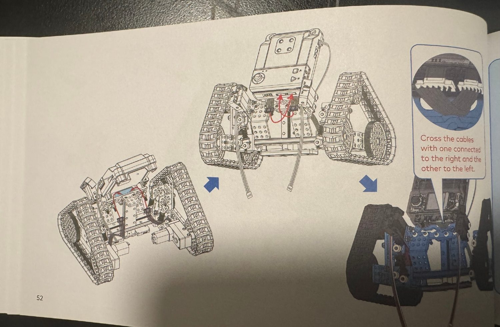
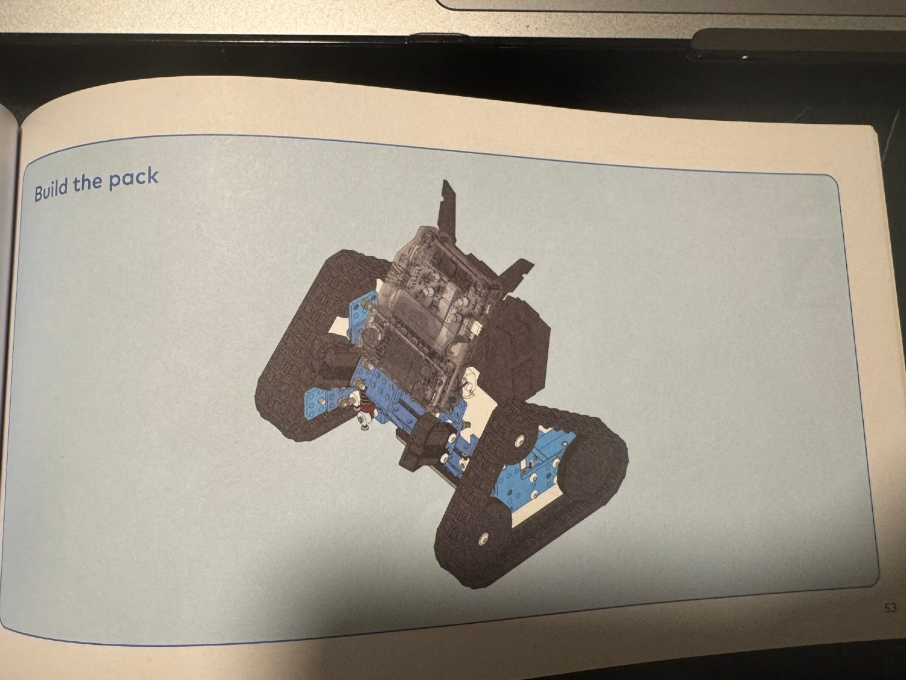
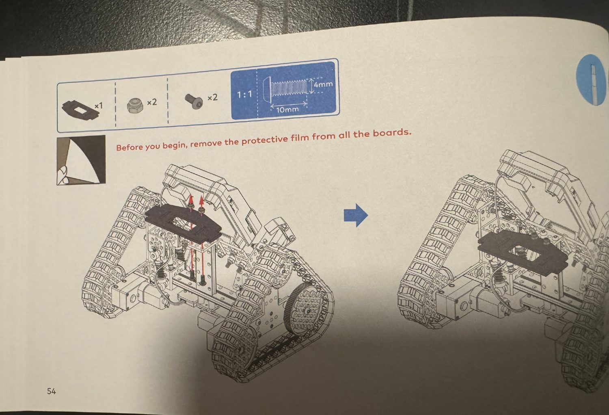
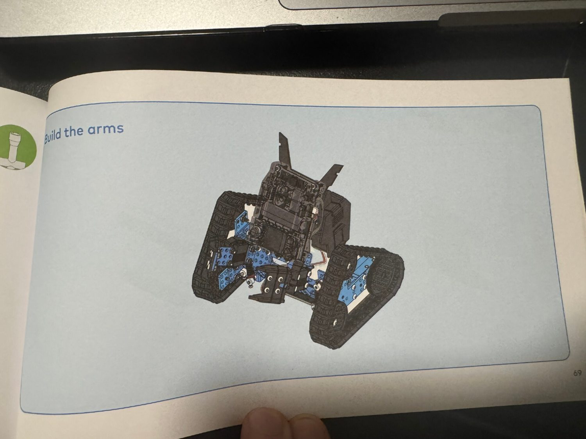
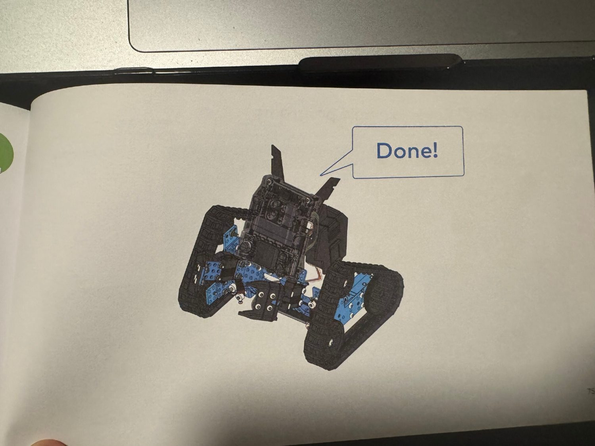
Teach it — the concept
This is the longest build in the whole programme, and it is worth naming that out loud: the printed guide runs to seventy pages and the Rover has more parts than the whole of last year's robot. Work in phases and finish each one before starting the next — chassis, then head, then shells, then arms. A phase left half-done is where parts go missing.
Two things are not obvious and both cost a session if they survive. The motor cables are crossed on the Rover — left to EM2, right to EM1, the opposite of last year's robot, so anyone copying from memory gets it backwards. And after tightening a wheel-hub screw you back the nut off 90° counter-clockwise: the wheel has to spin free or the track binds and the robot crawls.
Quick Start Guide — this session
Guide
printed booklet · Build the chassis → Build the arms
Cables
CROSSED — left ↔ right, unlike last year
Nut
back off 90° counter-clockwise, must spin free
Servos
gripper → S1 · second arm → S2
Watch out
Build from the printed booklet — not from mbot2_addons.pdf, which builds the Ranger. The crossed motor cables below are the Rover's; the Ranger wires them straight, and a robot built from the wrong guide will not run this course's programs.
The motor cables are CROSSED on the Rover. If you built last year's mBot2, your hands will do it wrong from memory — check the page, not your memory.
Back the wheel-hub nuts off 90° after tightening. A bound track looks like a weak motor and wastes an afternoon.
Metal shock absorbers, not the plastic ones. The plastic ones are spares.
Peel the film off the boards while you sort, not while you build.
Do not power the servos yet. Their safe range gets measured by hand, unpowered, in Step 4.
Lesson flow — minute by minute
35′Chassis: join the two track modules to the frame, fit the metal shock absorbers (×4 — the plastic ones in the box are spares) and the shaft collars. Check both tracks turn by hand before going on.
✓Both track modules on the frame with the four metal shock absorbers fitted — and both tracks turn by hand.
20′Head: CyberPi and Shield onto the top plate, sensor on the front with the 20 cm mBuild cable. Motor cables crossed — left to EM2, right to EM1. Check this twice; it is the error of the year.
✓CyberPi and Shield on the top plate, sensor on the front, and the motor cables crossed: left to EM2, right to EM1. Checked twice.
20′Shells: peel the paper film off Boards 1–8 and fit the body. Tuck every cable as you close it up — anything loose now is unreachable in ten minutes.
✓The body closed with every cable tucked where you cannot reach it any more — because now you do not need to.
20′Arms: the two servos and the grip arms, the last phase in the guide. Gripper servo into S1, second arm into S2 — the ports are printed on the shield, and every program this year expects those two. Leave them unpowered; you find their safe range by hand in Step 4.
✓Both servos and the grip arms fitted, left unpowered. You find their safe range by hand in Step 4.
15′Cross-team QC: another team turns both tracks by hand, checks the cables are crossed the right way, and shakes it. They sign it off.
✓Another team has turned both tracks, checked the crossed cables and shaken the robot, and signed it off.
10′On your lesson sheet: which phase took longest, and what you would tell a team starting it tomorrow.
✓A log line naming the longest phase and what you would tell a team starting it tomorrow.
◉ Expected result at the end of this session
👁WATCH FOR
Turn both tracks by hand. They move freely and feel the same as each other.
👁WATCH FOR
The left motor goes to EM2 and the right to EM1. Crossed, on purpose.
👁WATCH FOR
Shake it. Nothing rattles, and no cable is trapped under a track.
Teacher check
Both tracks turn freely by hand, neither binding
Motor cables crossed correctly, checked by another team
All eight body boards fitted, film peeled, cables tucked